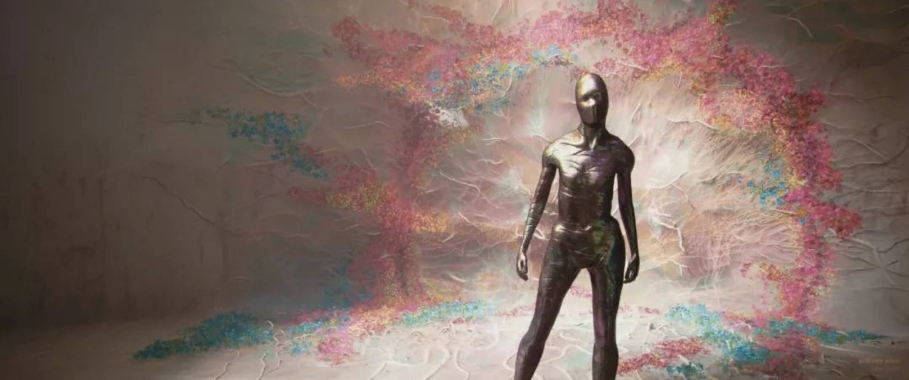
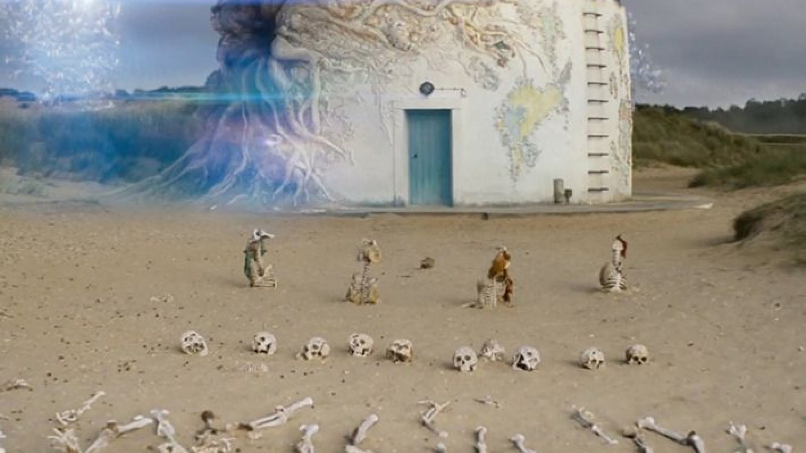
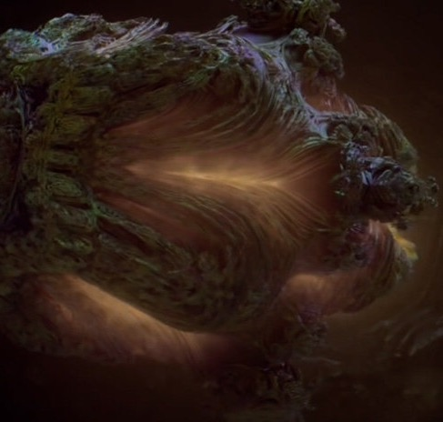

Behind the Shimmer
The shimmer is a strange phenomenon originating from a lighthouse in louisiana, which consumes the area around it, and is continually expanding.
The only way to get here is to be enlisted in the highly classified project, so try to get lucky. Best if you're already in the military, preferably Army or Marine Corps.
You have about two places you can sleep. You can bring a tent, which allows you to sleep wherever, or you can sleep at the abandoned military base. For pricing, the military base will most likely cause you to lose a member of your crew each night, but you get a much more comfortable experience.



Address: 81724627193827 Lane Street, Road, ST 00000
Phone: 1-(2)-3-45